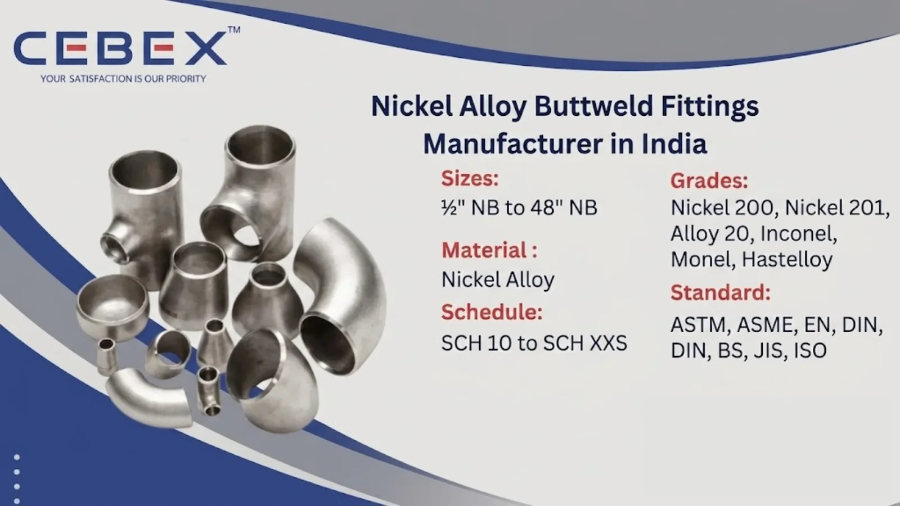

Leading Manufacturer & Exporter of Nickel Alloy Buttweld Pipe Fittings
In the demanding world of industrial piping systems, the reliability, corrosion resistance, and mechanical performance of every fitting are critical to long-term operational success. As a leading Nickel Alloy Buttweld Pipe Fittings Manufacturer in India, CEBEX STEEL INDIA has established a strong reputation among EPC contractors, procurement companies, industrial plants, and global buyers for supplying premium-quality Nickel Alloy Buttweld Pipe Fittings that comply with the highest international standards.
Our advanced manufacturing facility is equipped with modern forming, welding, machining, and testing infrastructure, enabling us to manufacture Nickel Alloy Buttweld Pipe Fittings with exceptional dimensional accuracy, superior surface finish, and consistent metallurgical properties. Whether your project involves chemical processing, offshore drilling, power generation, petrochemicals, marine engineering, or heat exchanger systems, our Nickel Alloy Buttweld fittings deliver dependable performance and long service life.

Selecting the right Nickel Alloy Buttweld Pipe Fittings supplier directly impacts the safety, reliability, and efficiency of industrial piping systems. CEBEX STEEL INDIA is recognized as a preferred manufacturer and exporter due to our strong focus on quality assurance, technical expertise, and customer satisfaction. We are ISO 9001:2015 certified and maintain strict compliance with international manufacturing standards required for global industrial projects.
Our in-house quality testing facility performs comprehensive mechanical, chemical, dimensional, and non-destructive testing on every production batch. We maintain full traceability from raw material procurement to finished fittings, ensuring complete transparency and quality consistency. Every shipment is supplied with Mill Test Certificates (EN 10204 3.1/3.2), PMI reports, NDT reports, and complete export documentation. Our experienced logistics and export team ensures smooth deliveries to clients across Africa, the Middle East, Europe, Southeast Asia, and other international markets.
Our Nickel Alloy Buttweld Pipe Fittings are manufactured using premium-quality raw materials sourced from approved mills with complete traceability. We offer a comprehensive range of fitting types, dimensions, wall thicknesses, and custom configurations suitable for demanding industrial applications. From standard ASME fittings to project-specific custom-engineered solutions, our manufacturing capabilities ensure precision and reliability at every stage.
The following table summarizes the key features and specifications of our Nickel Alloy Buttweld Pipe Fittings:
| Feature | Specification / Detail |
|---|---|
| Standards | ASTM, ASME, EN, DIN, BS, JIS, ISO |
| Grades | Nickel 200, Nickel 201, Alloy 20, Inconel, Monel, Hastelloy |
| Size Range | ½" NB to 48" NB |
| Thickness | SCH 10 to SCH XXS |
| Types | Elbow, Tee, Reducer, Cap, Stub End, Cross |
| Surface Finish | Pickled, Passivated, Machined, Polished |
| Pressure Ratings | SCH 10, 20, 40, 80, 160, XXS |
| Documentation | MTC EN 10204 3.1/3.2, PMI, NDT, Hydro Test |
Our product portfolio includes a complete range of Nickel Alloy Buttweld Pipe Fittings designed for critical industrial piping systems. We manufacture long radius elbows, short radius elbows, equal tees, reducing tees, concentric reducers, eccentric reducers, end caps, stub ends, crosses, and customized fittings according to project drawings and technical specifications.
Our engineering and production teams work closely with clients to ensure precise dimensional tolerances, material compliance, and application suitability. We also manufacture seamless and welded Nickel Alloy Buttweld fittings suitable for both high-pressure and corrosive service applications.
We manufacture Nickel Alloy Buttweld Pipe Fittings in multiple grades suitable for corrosive chemicals, seawater exposure, high-temperature processing, and pressure-intensive operations. All raw materials are procured from reputed approved mills with complete traceability and certification.
| Nickel Alloy Grade | Typical Applications | Standards |
|---|---|---|
| Nickel 200 | Food processing, chemical handling | ASTM B366 |
| Nickel 201 | Caustic handling, electronics | ASTM B366 |
| Alloy 20 | Sulfuric acid processing | ASTM B366 |
| Inconel 600 | Heat exchangers, furnaces | ASTM B366 |
| Inconel 625 | Offshore & marine applications | ASTM B366 |
| Hastelloy C276 | Chemical processing industries | ASTM B366 |
Every Nickel Alloy Buttweld Pipe Fitting undergoes strict quality testing and inspection procedures. Our laboratory performs spectrographic analysis, tensile testing, hardness testing, flattening tests, and non-destructive examinations including ultrasonic and radiographic testing.
| Property | Typical Values |
|---|---|
| Tensile Strength | 480 – 950 MPa |
| Yield Strength | 170 – 550 MPa |
| Elongation | 30 – 45% |
| Hardness | 85 – 250 HB |
| Chemical Elements | Ni, Cr, Mo, Fe, Cu, Mn, Si, C |
All test reports and certifications are supplied along with every shipment for complete traceability and compliance.
We manufacture Nickel Alloy Buttweld Pipe Fittings in a broad dimensional range from ½" NB to 48" NB with wall thicknesses ranging from SCH 10 to SCH XXS. Our production complies with ASME B16.9, ASME B16.28, MSS SP-43, EN 10253, DIN, and other international dimensional standards. Custom dimensions, schedules, and special machining options are available upon request.
| Size (NB) | Center to End (mm) | Outside Diameter (mm) | Wall Thickness (mm) |
|---|---|---|---|
| ½" | 38 | 21.3 | 2.77 |
| 1" | 51 | 33.4 | 3.38 |
| 2" | 76 | 60.3 | 3.91 |
| 4" | 152 | 114.3 | 6.02 |
| 8" | 305 | 219.1 | 8.18 |
Our Nickel Alloy Buttweld Pipe Fittings are widely used across industries requiring exceptional corrosion resistance, oxidation resistance, and high-temperature performance. Chemical processing plants use our fittings in acid handling systems, reactors, and pressure vessels. Offshore and marine industries rely on Nickel Alloy Buttweld fittings for seawater resistance and durability under harsh operating conditions.
We also supply Nickel Alloy Buttweld Pipe Fittings for oil & gas, petrochemical, fertilizer, desalination, pulp & paper, power generation, pharmaceutical, aerospace, and heat exchanger industries. Our fittings are trusted for critical piping applications where long-term reliability is essential.
Every Nickel Alloy Buttweld Pipe Fitting undergoes strict dimensional inspections, visual examinations, and comprehensive mechanical and non-destructive testing including PMI Testing, Ultrasonic Testing, Hydrostatic Testing, Radiography Testing, Hardness Testing, Tensile Testing, and Flattening Tests.
All products are supplied with complete inspection reports and EN 10204 3.1/3.2 certification.
Our Nickel Alloy Buttweld Pipe Fittings are packed in export-grade wooden boxes, fumigated crates, or pallets to prevent transit damage. Each fitting is properly marked with grade, size, heat number, and specification details.
Our logistics team manages complete export documentation including invoices, packing lists, certificates of origin, and inspection certificates. We export regularly to Africa, Europe, the Middle East, and Southeast Asia.
As a trusted Nickel Alloy Buttweld Pipe Fittings Manufacturer in India, we have developed strong export capabilities for supplying industrial piping components across Africa. Our export division understands the technical and logistical requirements of African industrial projects and ensures smooth deliveries with complete compliance documentation.
Our Nickel Alloy Buttweld Pipe Fittings are supplied to clients in Nigeria, Egypt, Kenya, South Africa, Ethiopia, and other African countries for applications in oil & gas, mining, power generation, chemical processing, and infrastructure development projects. To learn more about our specialized solutions for the continent, visit our Africa Nickel Alloy Buttweld Pipe Fittings Exporter page.
In addition to Nickel Alloy Buttweld Pipe Fittings, we also manufacture and export Inconel Buttweld Pipe Fittings, Hastelloy Buttweld Pipe Fittings, Monel Buttweld Pipe Fittings, Duplex Buttweld Pipe Fittings, Super Duplex Buttweld Pipe Fittings, and Titanium Buttweld Pipe Fittings. These high-performance alloy buttweld fittings are engineered for demanding industrial applications requiring superior corrosion resistance, excellent mechanical strength, thermal stability, and reliable long-term performance under extreme pressure and temperature conditions.
Our technical team assists clients in selecting the optimal alloy material and fitting configuration based on specific operational requirements and international project standards.
Browse our full range:
Our clients choose CEBEX STEEL INDIA for our technical expertise, commitment to quality, and responsive service. We offer direct-from-manufacturer pricing, flexible order quantities, and comprehensive after-sales support. Our engineering team is available to assist with material selection, specification review, and custom design, ensuring that you receive the optimal solution for your application.
Our fittings are manufactured according to ASTM, ASME, EN, DIN, JIS, ISO, and MSS international standards.
Yes, all shipments are supplied with EN 10204 3.1/3.2 Mill Test Certificates and inspection reports.
We manufacture elbows, tees, reducers, caps, stub ends, crosses, and custom buttweld fittings.
Yes, we export regularly to Africa, Europe, the Middle East, Southeast Asia, and other global markets.
Absolutely. We manufacture custom sizes, schedules, and configurations according to client drawings and project requirements.